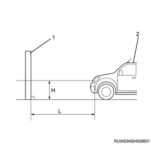

1. Inspect the headlight assembly with the headlight tester.
Note
- After inspecting the headlight assembly using the headlight tester, make adjustments.
- To adjust the optical axis, it should be performed after initializing the vehicle height value in the auto leveling control unit.
- Inspect the tire air pressure and contamination on the headlight lens.
- Set the vehicle to the vehicle conditions at the time of inspection.
- Project both of the headlight center points (Bulb center mark) (A) and (B) onto the screen and draw vertical lines.
Note
- Place the vehicle 1 m (3.28 ft) away from the screen.
- Draw a line on the screen that is at the same height as the center point of the headlight.

Note
- Turn on the headlights and set them to the low beam.
- Cover the other headlight which is not being adjusted with a black cloth, etc.
- Align the bending point with the vertical line in the horizontal adjustment, and set the light-dark boundary line from the horizontal line to the value in the following table in the vertical adjustment.
| Downward
Bending point
alignment | Leftward/
Rightward
Bending point
alignment |
Height of the light
is less than 1 m
(3.28 ft) | L = 12 mm (0.47 in) | 0 |
Note
- Vertical adjustment
Turn the adjusting screw using a screwdriver to adjust the vertical direction of the optical axis.
Note
- Horizontal adjustment
Turn the adjusting screw using a screwdriver to adjust the horizontal direction of the optical axis.